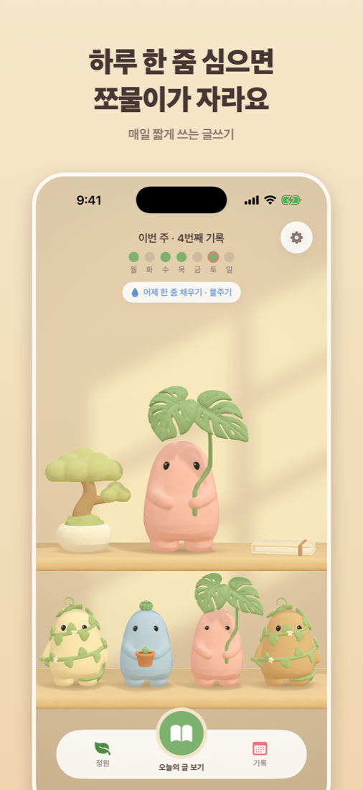
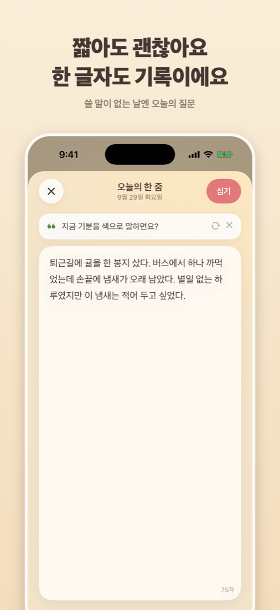
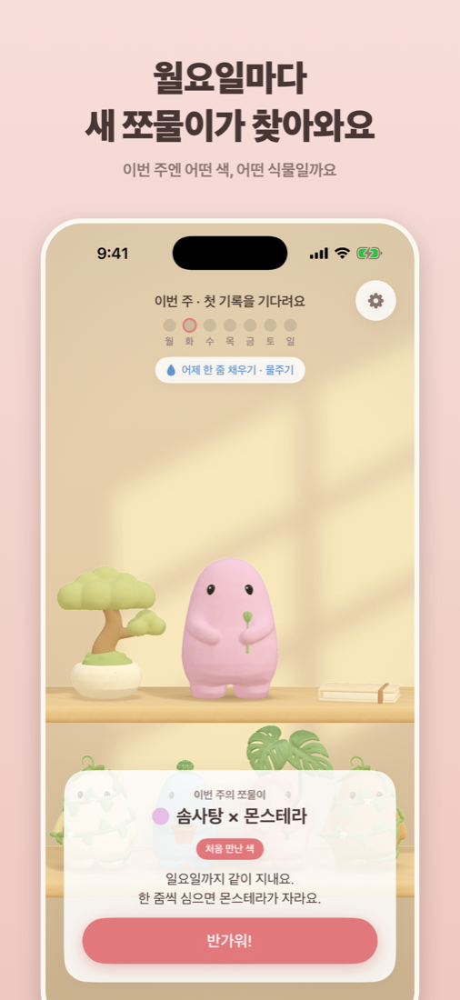
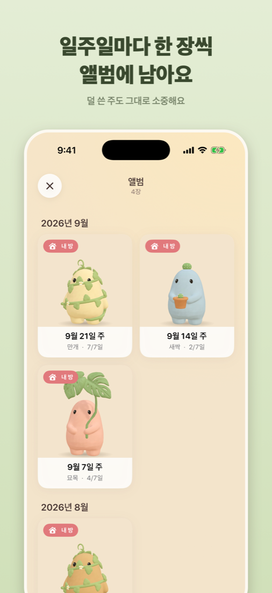
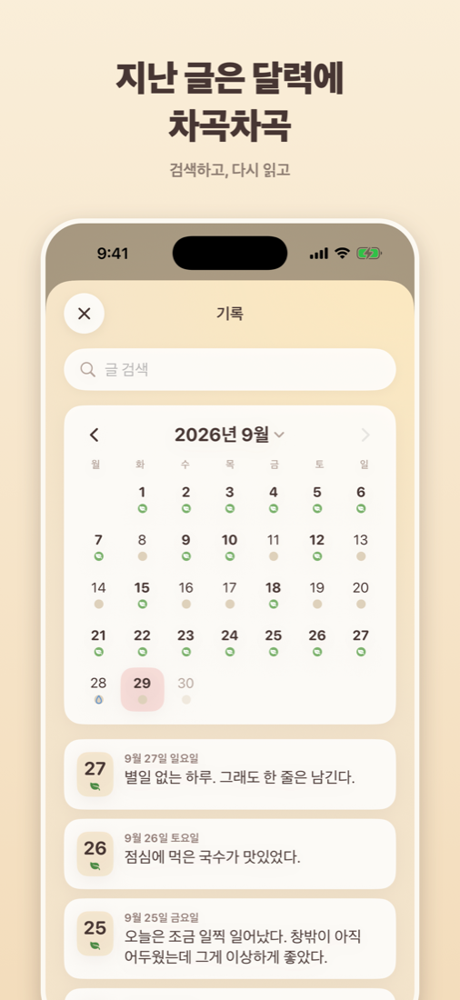
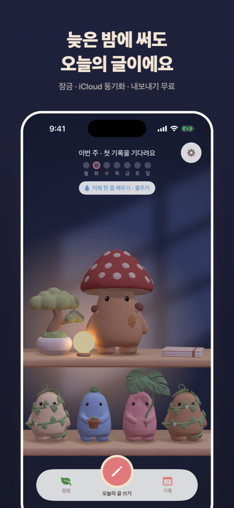

쪼물쪼물
쓴 만큼 자라는 나만의 일기장
일기는 매번 실패했지만, 한 줌은 할 수 있어요.
하루에 한 줌씩 글을 심으면 점토 친구 쪼물이의 식물이 자라요.
출시 준비 중이에요.
한 글자여도 기록이에요
길이를 재지 않아요. 쓸 말이 없는 날엔 오늘의 질문이 말을 걸어요. 밤늦게 쓴 글도 오늘의 글로 남아요.
쓴 만큼 자라요, 놓쳐도 줄지 않아요
쓴 날마다 식물이 한 단계 자라고, 일곱 번이면 활짝 피어요. 빠진 날은 그냥 없는 날이에요. 덜 자란 쪼물이도 그대로 소중해요.
월요일마다 새 쪼물이가 찾아와요
주마다 색과 식물이 달라요. 선인장, 덩굴, 몬스테라, 버섯, 귤나무. 점토 색은 열네 가지. 사람마다 다른 쪼물이가 와요.
일주일마다 한 장씩 앨범에 남아요
그 주의 쪼물이가 사진 한 장으로 남아요. 1년이면 52장. 마음에 드는 아이는 내 방 선반에 세워 두세요.






- 글은 내 기기와 내 iCloud에만 저장돼요. 개발자는 볼 수 없어요.
- 잠금, iCloud 동기화, 텍스트·PDF·백업 내보내기 전부 무료예요.
- 광고가 없고, 수집하는 정보도 없어요.